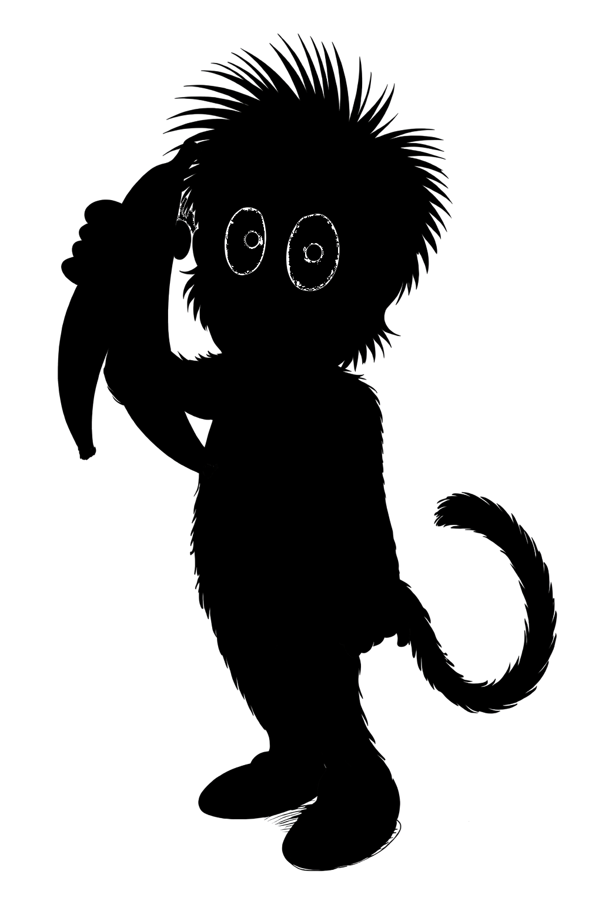

うっきち


| 名前 | うっきち |
|---|---|
| 役割 | ムードメーカー |
| 特徴 | 明るい茶色の体毛、長い尻尾、ぼさぼさの髪 |
「えへへ、いたずら大成功～！…あれ？」
こもれびゆうえんちのムードメーカー、うっきち！
いたずら好きだけど憎めない、元気いっぱいのおサルです。
長い尻尾とぼさぼさの髪がチャームポイント。
いつもみんなを笑わせようとするけれど、最後は自分がひどい目にあうことも…？
いたずら好きだけど憎めない、元気いっぱいのおサルです。
長い尻尾とぼさぼさの髪がチャームポイント。
いつもみんなを笑わせようとするけれど、最後は自分がひどい目にあうことも…？
得意なこと
- いたずら（でも最後は失敗する）
- みんなを笑顔にすること
- 木登り
出演コーナー
- うっきちのいたずら大作戦（メイン）
- みんなであそぼう！